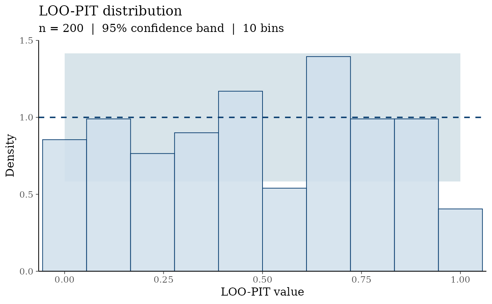
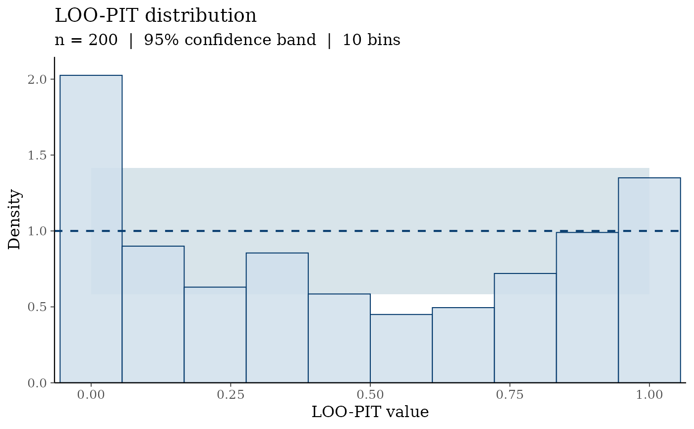
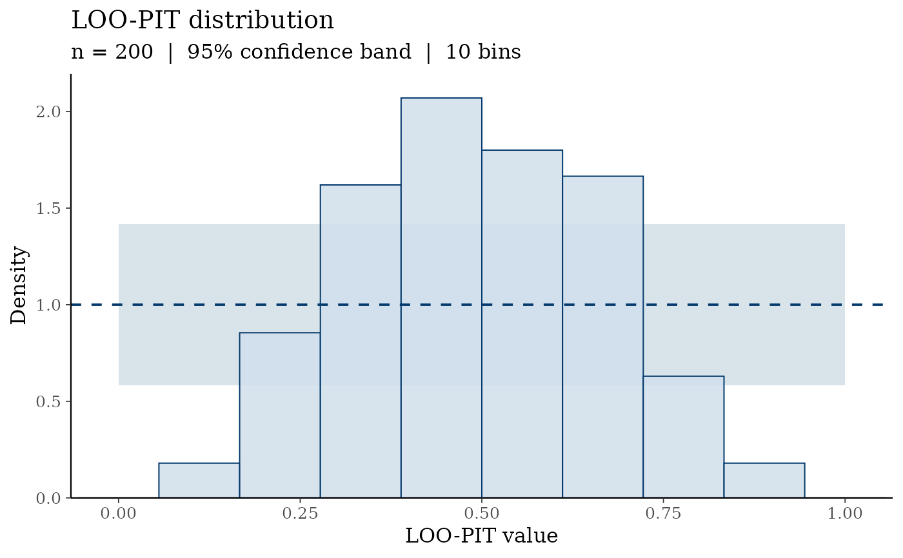

Plots the distribution of LOO probability integral transform (LOO-PIT) values as a density histogram, overlaid with the expected Uniform(0, 1) density and a simultaneous confidence band. Under ideal calibration the LOO-PIT values are approximately Uniform(0, 1); departures indicate over-dispersion (U-shaped histogram) or under-dispersion (hump-shaped).
Arguments
- pit
A numeric vector of LOO-PIT values in [0, 1]. Typically obtained from
loo::loo_pit().- bins
Integer. Number of histogram bins. Default
10.- prob
Numeric in (0, 1). Coverage probability for the confidence band around the uniform density. Default
0.95.- ...
Currently unused. Included for future extensibility.
Value
A ggplot2::ggplot object.
Details
Each bin count follows a \(\text{Binomial}(n, 1/K)\) distribution under
the null hypothesis that PIT values are Uniform(0, 1), where \(n\) is
the number of observations and \(K\) = bins. The confidence band is
derived from the normal approximation to the binomial, converted to the
density scale (\(K/n\) × count).
The histogram bars display density, not counts, so the theoretical uniform reference is the horizontal line at \(y = 1\).
References
Vehtari, A., Gelman, A., and Gabry, J. (2017). Practical Bayesian model evaluation using leave-one-out cross-validation and WAIC. Statistics and Computing, 27(5), 1413–1432. doi:10.1007/s11222-016-9696-4
Gabry, J., Simpson, D., Vehtari, A., Betancourt, M., and Gelman, A. (2019). Visualization in Bayesian workflow. Journal of the Royal Statistical Society Series A, 182(2), 389–402. doi:10.1111/rssa.12378
See also
ppc_pit_qq() for the Q-Q variant; ppc_coverage() for
posterior predictive coverage checks.
Examples
set.seed(2024)
# Well-calibrated model: PIT values near Uniform(0,1)
pit_good <- runif(200)
ppc_pit_hist(pit_good)

# Over-dispersed model: PIT values concentrated near 0 and 1
pit_over <- rbeta(200, shape1 = 0.4, shape2 = 0.4)
ppc_pit_hist(pit_over)

# Under-dispersed model: PIT values concentrated near 0.5
pit_under <- rbeta(200, shape1 = 4, shape2 = 4)
ppc_pit_hist(pit_under)
